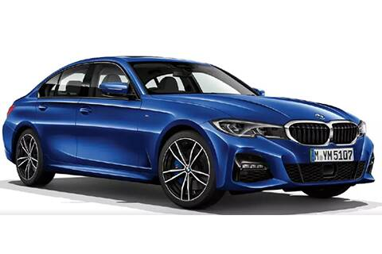

| Car Name | Image of the Car | Description of the Car | Link |
|---|---|---|---|
| BMW |  | Bayerische Motoren Werke AG (BMW), is a German multinational company which produces luxury vehicles and motorcycles. The company was founded in 1916 as a manufacturer of aircraft engines, which it produced from 1917 until 1918 and again from 1933 to 1945. The company has significant motorsport history, especially in touring cars, Formula 1, sports cars and the Isle of Man TT. BMW serves purely as a status symbol for some, while for others it's a belief in the mantra “The Ultimate Driving Machine” and philosophy of high revving engines. With that in mind, some are not only attracted to the BMW brand just because they produce great cars, but also because of their way of doing things. | Click here to go the official website BMW |
| Mercedes Benz | Mercedes-Benz is known for producing luxury vehicles and commercial vehicles. The headquarters is in Stuttgart, Baden-Württemberg. The name first appeared in 1926 under Daimler-Benz. In 2018, Mercedes-Benz was the largest seller of premium vehicles in the world, having sold 2.31 million passenger cars. Founders: Carl Benz Subsidiary: Mercedes-AMG Parent: Daimler AG |
Click here to go the official website Mercedes Benz |
|
| Lamborghini | Automobili Lamborghini S.p.A. is an Italian brand and manufacturer of luxury sports cars and SUVs based in Sant'Agata Bolognese. The company is owned by the Volkswagen Group through its subsidiary Audi. Ferruccio Lamborghini founded Automobili Ferruccio Lamborghini S.p.A. in 1963 to compete with established marques, including Ferrari. The company was noted for using a rear mid-engine, rear-wheel drive. There are various elements such as automatic climate control, premium leather materials, power seating, air filtration, power features, performance speakers, and LCD monitors. On the exterior, you will find things like light tinted glass, auto dimming side mirrors, LED brake lights, and specialty headlights. | Click here to go the official website Lamborghini |
NAME : Chilukuri Vara Sai Lakshmi Supraja ROLL NUMBER : 1906149 |